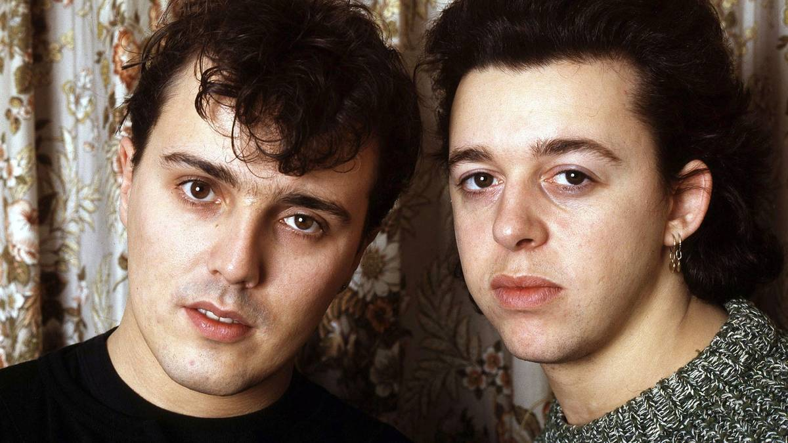

Why This Most Used Song In TV And Film Still Rules 40 Years Later
{kind=link}

Tears for Fears “Everybody Wants to Rule the World” is one of the most ubiquitous songs from the ‘80s, evolving into a cinematic shorthand for the steely ambition that defined the decade. It was lifted from the English synth-pop band’s sophomore album Songs From The Big Chair, and the iconic album celebrates its 40th anniversary in November with a deluxe reissue.
Unlock Personalized Content &
Exclusive Features For Free
- Engage in discussions in Threads
- Follow and Like top authors, topics, and trends
- Browse with fewer ads across the site
- Personalize your profile to showcase your activity
- Get a content feed tailored to your interests
By creating an account, you agree to our Terms of Use and Privacy Policy. You also agree to receive our newsletters; you can unsubscribe any time.
Log in or Create an Account For Free
Create an account
Please provide your email address to finish creating your account.
*Required: 8 chars, 1 capital letter, 1 number
By creating an account, you agree to our Terms of Use and Privacy Policy. You also agree to receive our newsletters; you can unsubscribe any time.
It’s an album that never really left the pop-cultural consciousness. Not unlike Tears for Fears’ earlier breakthrough hit “Mad World” (covered so memorably by Gary Jules for the Donnie Darko soundtrack), “Everybody Wants to Rule the World” spanned the decades in its influence, with Lorde’s famous cover of the song making another appearance in streaming series The Girlfriend this month.
Songs From The Big Chair arrived on February 25, 1985, topping the US charts for 5 weeks and delivering two #1 singles with “Everybody Wants to Rule the World” and “Shout,” alongside several other hit singles, including “Head Over Heels,” “Mothers Talk,” and “I Believe.”
Building on the band’s success from their debut, The Hurting (which featured “Mad World”), it showcased similar emotive melodies and evocative synths. However, Songs From The Big Chair marked a break from Tears for Fears’ earlier introspective focus. “Everybody Wants to Rule the World” and “Shout” saw them scaling for a more transcendent sound.
All The Tears For Fears You Can Handle: What Makes the Anniversary Edition Special
The 40th anniversary reissue of Songs From the Big Chair is now available to preorder and arrives with a series of expanded physical editions, available on vinyl, CD, and streaming platforms. Tears for Fears tragics will likely be most interested in the Limited-Edition Transparent Red Vinyl, a double-vinyl pressing of the original album with selected B-sides, plus unused artwork that includes alternative cover designs from 1985.
There is also a Limited Edition single-vinyl pressing of the original core album that comes printed on special Coke-Bottle clear vinyl, while those who still own CD players are treated to a 3-CD Deluxe Set that packs in an exhausting selection of B-sides, demos, extended remixes, and rarities, including expanded content from the 2014 deluxe edition for a total of 45 tracks.
Meanwhile, listeners of digital downloads and streaming are offered the full selection of 45 tracks, with the original album available to stream on Spotify’s vaunted new high-res audio. If that’s still not enough Tears for Fears for you, check out the surround-sound edition that is available on limited-edition Blu-ray featuring a brand-new Dolby Atmos mix by Steven Wilson.
“Everybody Wants To Rule The World” Is Still Pop Culture’s Ultimate Power Anthem
More than any other track on Songs From the Big Chair, “Everybody Wants to Rule the World” remains as ubiquitous as ever. Lorde’s cover might have resurfaced as the de facto theme song for Amazon series The Girlfriend this month, though it already played a massive part in communicating themes of ambition and control for The Hunger Games: Catching Fire in 2013.
The song quickly became the go-to soundtrack signifier for intrigue and manipulation, drafted in whenever a Hollywood script needed to telegraph dangerous power plays and shifting alliances. It’s appeared in more than 50 film and television soundtracks, licensed as early as 1985 in decade-defining show Miami Vice in the Val Kilmer cult sci-fi comedy Real Genius, leveraged to back a montage sequence in the film’s middle acts as the titular college geniuses develop a laser-powered military project.
Decades later, it appeared in the debut season of Mr Robot, channeling the show's core themes of societal control. Mira Sorvino and Lisa Kudrow danced to the song in Romy and Michele’s High School Reunion, a comedic reflection of their own powerplay via reinvention. Meanwhile, it soundtracked Adam Sandler’s embrace of ultimate power via remote control in Click.
However, while shows like The Girlfriend might still tap the song to illustrate precarious power struggles, “Everybody Wants to Rule the World” is just as often used in a nostalgic context. It channeled ‘80s vibes in Netflix staple Stranger Things, once signified a flashback scene in Cold Case, and also surfaced in acclaimed Cold War drama The Americans.
Meanwhile, it’s appeared in numerous period pics like Transformers spinoff Bumblebee, slasher throwback The Final Girls, as well as sitting pretty alongside Van Halen “Jump” as the ultimate ‘80s signifier in Steven Spielberg’s 2018 nostalgia explosion Ready Player One.